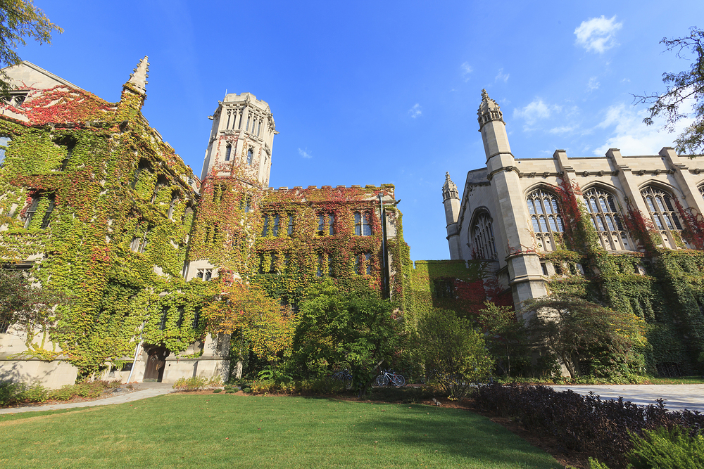

{% include JB/setup %}
<!-- Content Area Start -->
<div id="content">
      <!-- sliders -->
      <div id="sliders">
        <div class="full-width">
          <!-- light slider -->
          <div id="light-slider" class="carousel slide">
            <div id="carousel-area">
              <div id="carousel-slider" class="carousel slide" data-ride="carousel">

                <div class="carousel-inner" role="listbox">
                  <div class="carousel-item active">
                    
                    <div class="carousel-caption">
                      <h3 id="slideImage" class="slide-title animated fadeInDown">Hyper Intelligent <br>Media Network <br>Platform Lab</h3>
                      <h4 id="slideLeft" class="slide-text animated fadeIn">
                        School of Information Communication Engineering
                        <br>
                        Chonnam National University
                      </h4>
                      
                    </div>
                  </div>
                  
                </div>
                
              </div>
            </div>
          </div>
        </div>
      </div>
      <!-- End sliders -->
                        
            
      <div class="mb-60"></div>
	<div id="features" class="container">
	<!-- SERVICES -->
            <div id="textCen" class="sub-title">
              <p>
              <h2>Hyper Intelligent Media Network Platform(HI-IoP) Lab.</h2>
              </p>
              <p class="textSize1">
                전남대학교 컴퓨터정보통신공학과 초지능 미디어 네트워크 플랫폼 연구실 방문을 환영합니다.
              </p>
              <p></p>
            </div>     
	</div>
            <div class="mb-60"></div>
	              

      <div class="back-gray">
        <div class="container sub-title space-left">
          
          <div class="mb-60"></div>
          <p>
            <br>
            <br>
            <br>
          <h2>HI-IoP Projects</h2>
          </p>
          <p class="second-color">
            <hr class="second-width">
              Latest Projects
          </p>
          <p></p>
        </div>

        <!-- posts carousel -->
        <section id="blog">
          <div class="container">                              
            <div id="posts-carousel" class="owl-carousel">
             {% for post in site.posts %}     
              <div class="blog-block blog block carousel-post">
               {% if post.img %}           
                
               {% endif %}           
                <h5>{{ post.title }}</h5>
                <p>{{ post.excerpt }}</p>
                <a href="{{ post.canonical }}" target="_blank">Full Article <i class="fa fa-arrow-right" aria-hidden="true"></i></a>
              </div>
             {% endfor %}     
            </div>              
          </div>
        </section>
      </div>

      <div class="mb-60"></div>
      <div class="container">
        <div class="sub-title">
          <h2>Recent News</h2>
        </div>
        <div class="table-responsive mtb">
          <table class="table table-bordered table-1 ">
            <thead>
              <tr>
                <th>Date 2018.</th>
                <th>Lab News</th>
              </tr>
            </thead>
            <tbody>
              <tr>
                <td>2018.07.30 ~ 08.02</td>
                <td>카이스트(KAIST, Daejeon, Republic of Korea)에서 주체한 Amazon Web Service와 MXNet SageMaker 교육을 
                  Sang Woo Kim and Linh Van Ma등 참가. </td>
              </tr>
              <tr>
                <td>2018.07.03 ~ 06</td>
                <td>제10회 유비쿼터스 및 퓨처 네트워크 국제 컨퍼런스(ICUFN 2018, Prague, Czech)에 
                  Van Quan Nguyen와 Linh Van Ma등 참가. </td>
              </tr>
              <tr>
                <td>2018.05.24 ~ 27</td>
                <td>도시 재해에 대한 연구 발표(World IT Show 2018 (WIS2018), COEX A, B, C Hall, Seoul, Korea)</td>
              </tr>
              <tr>
                <td>2018.01.17 ~ 19</td>
                <td>MSME Enterprises용 비지니스 솔루션 국제 컨퍼런스 참가(ICSMB 2018 (ICSMB 2018), Manila, Philippine)</td>
              </tr>
            </tbody>
          </table>
          <table class="table table-bordered table-1 ">
            <thead>
              <tr>
                <th>Date 2017.</th>
                <th>Lab News</th>
              </tr>
            </thead>
            <tbody>
              <tr>
                <td>2017.12.18 ~ 24</td>
                <td>제12회 KIPS 국제회의 유비쿼터스 정보 기술 및 응용 (CUTE 2017)과 
                  제3차 국제회의 차세대 컴퓨팅((ICNGC 2017b), 대만)에 Linh Van Ma이 참가.
                  </td>
              </tr>
              <tr>
                <td>2017.12.17 ~ 23</td>
                <td>통신 및 정보용테크놀로지(University of California (UCSD ), San Diego)전문 
                  캘리포니아 연구소에서 단기 인턴으로 Geunchang Choi이 참가.</td>
              <tr>
                <td>2017.08.23 ~ 28</td>
                <td>국제 컨퍼런스(빅 데이터, IoT 및 클라우드 컴퓨팅(BIC-17))
                  및 맴버쉽 트레이닝(Jeju, South Korea.)에 참가.
                </td>
              </tr>
              <tr>
                <td>2017.05.23 ~ 27</td>
                <td>도시 재해에 관한 최근의 연구를 ITRC 포럼(한국의 코엑스, 서울, 코엑스)에
                  참가 및 발표.
                  
                </td>
              </tr>
            </tbody>
          </table>
          <table class="table table-bordered table-1 ">
            <thead>
              <tr>
                <th>Date 2016.</th>
                <th>Lab News</th>
              </tr>
            </thead>
            <tbody>
              <tr>
                <td>2016.05.20 ~ 28</td>
                <td>국제회의(Internet Computing (ICOMP16), Las Vegas, USA.)에 
                  Sanghyun Park이 참가.
                </td>
              </tr>
              <tr>
                <td>2016.02.17 ~ 24</td>
                <td>Linh Van Ma는 대학원 단기 인턴쉽을 참가(Information, Production and Systems (IPS), 
                  Waseda University, Japan)그리고 세미나 참가하고 멀티미디어 전송 이슈 연구를 발표.</td>
              </tr>
            </tbody>
          </table>
        </div>

      </div>	
	 <div class="container">
	      {% include ads-block.html %}
	 </div>		 
      <div class="mb-60"></div>	
  
            
<!-- Content area end -->
</div>
